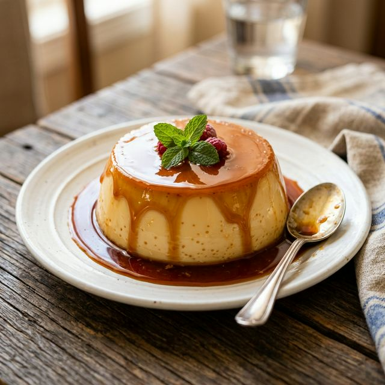

🍴
Sabores do Brasil
Portal de Receitas
Do fogão para a sua mesa
← Voltar às receitas

Sobremesas
▶ Vídeo disponível
★★★★★
Pudim de Leite
Clássico pudim cremoso com calda de caramelo dourada.
⏱
1h 20min
Tempo
👤
8 porções
Porções
📊
Médio
Dificuldade
🔥
210
kcal
🥘 Ingredientes
1 lata de leite condensado (395g)
2 latas de leite integral (use a mesma lata como medida)
3 ovos inteiros
1 xícara de açúcar (para a calda)
3 colheres de sopa de água (para a calda)
📝 Modo de Preparo
1
Calda: derreta o açúcar com a água em fogo médio até dourar. Despeje na forma e reserve.
2
Bata no liquidificador o leite condensado, o leite e os ovos por 2 minutos.
3
Despeje a mistura sobre a calda na forma.
4
Cubra com papel alumínio e asse em banho-maria a 180°C por 1 hora.
5
Deixe esfriar e leve à geladeira por pelo menos 4 horas.
6
Desenforme e sirva gelado.
🔥 Informação Nutricional
210
kcal / porção
Referência diária: 2.000 kcal
26% da referência diária por porção
⚠️ Alergênicos
leite
ovos
▶ Vídeo Tutorial